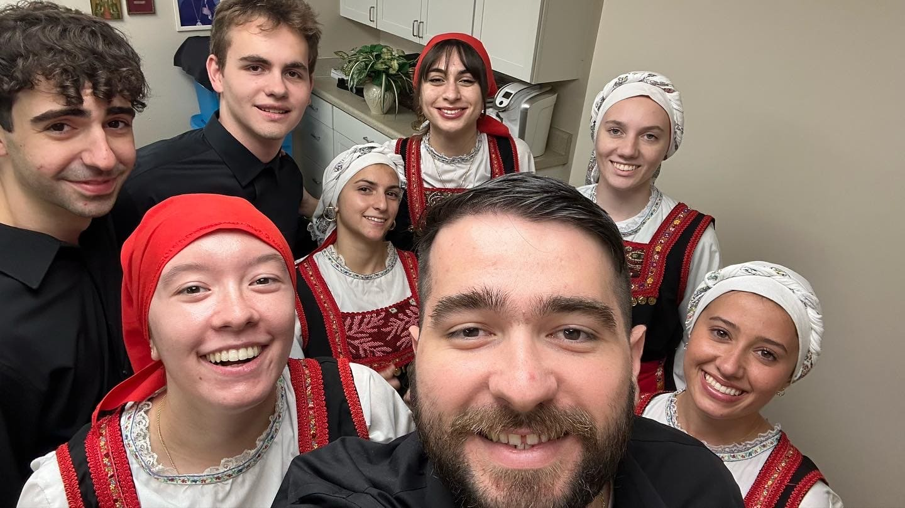

Bouzuki
A bouzuki is an instrument commonly used in Greek music. Picured
is the frist time I ever held and played it.
Faith Endowment - Lunchon 2023
Pictured is a photo from Faith Endowment's annual lunchon for
Faith Endowment scholars in New York.
Class of 2027
Above is one of the only times that the University of Florida's
graduating class of 2027 will all be present in the same room.
Herritage Greece Advisors
Haris and Kiki who were the Herritage Greece Program advisors that
taught me the true meaning of παν μέτρον άριστον.
Interview
On the first day of classes with the Heritage Greece program, they
had the Ministry of Tourism come out and host a workshop called
Imagining Greece. During the in-class session the representative
interviewed me to gain my perspective of how to increase their
tourism.
Faith Endowment
A scholarship I recieved in high school, but got featured in the
National Herald
in college.
Parliament
This is a photo taken from my experience on an inside tour of the
Hellenic Parliament in Athens, Greece
Midnight Shenanigans
Greek Dancing the kalamatiano down Αγιου Ιωαννου street at
midnight.
First Social
This is a photo taken from GASA's first social at Cava in 2023.
'Poseidon's Temple
At Poseidon Temple in Cape Sounion at the most southern point of
the Attica peninsula.
Foustanella
Foustanellas, the skirts of the military uniforms, have 400 pleats
in them as symbolism for the 400 years that Greece was under
Ottoman control.
Elefsis Shipyard
Sunny day at the Elefsis Shipyard, which is the largest in Greece.
It's Great to be a Florida Gator
This is a photo taken from the first day of school my sophomore
year of college at the University of Florida.
Oia, Santorini
The most known city in Santorini for its blue domed roofs.

Lecanto 2023
An annual performance by Afieroma at Lecanto, Florida's greek
festival.
Afieroma - Balos of Kythnos
The specific version we are practicing is a couples variation from
Kythnos.
Speed-Friending
GASA's first annual speed-friending event in 2024.
St.Andrew's Archive
This is an image that features many of my friends that I have been
traditional greek folk dancing with for years.
Hellenic Dance Festival - 2024
This is a photo taken after my dance group Afieroma won the
costume award in 2024.
Kalamata
A lesser known mountainous region with amazing views in Greece
located on the Peloponnese.

Santorini
The reason the water is so clear in Greece is because there is not
many fish in the sea polluting the waters.
Gator Basketball
This was a photo I took at my first Gator Basketball game.
Lego Parthenon
Pictured is a mini version of the Parthenon that can be found
inside the Acropolis Museum in Athens, Greece.

Cava Social
This is a photo taken from GASA's Cava social in 2024.
Lazaridis Winery
I had a tour of vineyards and the museum where they explained the
process of fermenting wine.